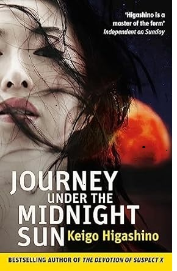

Journey Under the Midnight Sun
Journey Under the Midnight Sun

As his mother is cheating on him with a man hired by his family's pawnshop, Kirihara Ryoji runs away to play in the air ducts of an abandoned building, only to see his father committing an abusive act against his best friend Yukiho. Twisted fear and anger cause the eleven year old to stab his father to death with a pair of long scissors, and then Yukiho Nishimoto's mother and "her lover" also "accidentally die". Yukiho Nishimoto's mother and her "mother's lover" also died "accidentally", and she was then adopted by Reiko Karasawa, who lives alone in an elegant home. After seven years of peace and quiet after the tragedy, Ryoji Kirihara discovers that there are still people investigating the case, and that they have begun to suspect him and Yukiho Karasawa. Without the warmth of a family, the duo uses every means possible to get rid of their close family and friends one by one in order to keep their crimes from being discovered.
enjoy reading